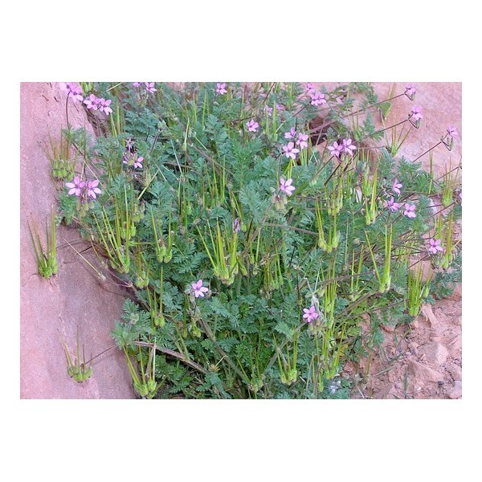

Ayuntamiento de Senés
JARDIN BOTANICO DE ESPECIES AUTOCTONAS DE SENES

Erodium cicutarium

Los alfilerillos del pastor (Erodium cicutarium) son una planta herbácea anual muy común en zonas abiertas, campos y caminos del ámbito mediterráneo. Se caracterizan por sus frutos alargados y en forma de aguja, que recuerdan a pequeños alfileres, de donde procede su nombre popular.
Presentan un porte bajo, generalmente entre 10 y 40 cm de altura, con hojas finamente divididas y de aspecto delicado. Sus flores son pequeñas, de color rosado o violáceo, y aparecen agrupadas en inflorescencias poco densas.
Los alfilerillos del pastor se distribuyen ampliamente por regiones templadas de Europa, Asia y el norte de África, creciendo en terrenos secos, campos cultivados, cunetas y zonas alteradas.
En la Sierra de los Filabres y en el entorno de Senés, son muy frecuentes en primavera, formando parte del conjunto de plantas herbáceas que colonizan terrenos abiertos.
Esta planta ha sido utilizada en medicina tradicional por sus propiedades astringentes y cicatrizantes. Se ha empleado en preparados naturales para tratar pequeñas heridas y afecciones cutáneas.
También se le han atribuido propiedades digestivas y diuréticas, aunque su uso ha sido más limitado que el de otras especies medicinales.
Los alfilerillos del pastor simbolizan la adaptación y la ingeniosa estrategia de dispersión de las plantas, gracias a sus frutos que se clavan en el suelo o se adhieren al entorno.
Su forma característica los convierte en un ejemplo de la diversidad y creatividad de la naturaleza.
En Senés, la planta era muy común, sobre todo en las zonas de labranza, que crecían como mala hierba, se clavaban en la ropa y era utilizada por los niños para jugar.
Se usaba como astringente, depurativa y entre otras cosas diurético.
Los alfilerillos del pastor florecen principalmente en primavera, produciendo flores pequeñas que posteriormente dan lugar a sus característicos frutos en forma de aguja.
Los frutos de esta planta tienen un mecanismo de torsión que les permite clavarse en el suelo, facilitando su germinación.
Este sistema es una adaptación muy eficaz para la dispersión de semillas en entornos secos y abiertos.